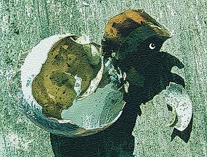
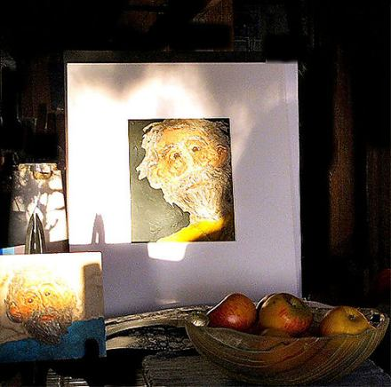

Elizabeth Barbato
Dulse
what cliff. sere light
and cloud, fail heaven.
now is climbing, now
is boatened water,
wood speech, clogs
on stone, a pull, a kilt,
a lift, wool, a space:
false moss.
blindfold. sand trapped
as glass, portcullis.
too soon for falseness,
an eye. sail heretics!
a ruler, a notation, eclipse.
what mouth. slammed nail.
tailed bird. tailed spring,
flesh lexicon, a wrist,
blindfold. snails. broken,
dumb shell. curved suborn:
equivocator, mollusc.
[ Previously published in Stride Magazine (UK) ]
Mr Lear

All at once my father’s clothes are too big on him.
He has shrunken into himself like a deflated soufflé.
Hard rind, pants bagging at the waist, teeth
ground down, hair silver, wild sand.
A pot with no lid that fits, a mousetrap tricked
and left unbaited, this old, old man.
My fury at this is appalling to me.
Who am I to question these auguries,
these owls of fortune? I cannot begin
to think what he hears in the dark:
two clocks ticking, yellow emergency radio
at the ready, wound and raring to go
whether or not the power goes out
or They drop The Bomb.
Even if it’s only static over ashen fields
we’ll hear it.
Near him, aslant in the moonlight
through the white net curtains
his unloaded rifle waits, patient soldier.
Nobody ever asks him who it’s for.
He sleeps while the moon rises over his land.
Outside a shadow falls over stilled water.
A splash through the ice on the pond
wakes him. He knows it’s only the muskrat
or even the beaver, who has become
somewhat more than an annoyance
but he heaves himself out of bed
before the snoring has stopped
and lets the night have at him.
He pays with the coin of open eyes.
[ Previously published in Stride Magazine (UK) ]
Born in New England, Elizabeth Barbato has taught English, music, and drama to every grade, from kindergarten through twelfth, over the past fourteen years. This summer she sails off to the Galapagos to consider the Vonnegut/Darwin connection. She has poems in current or forthcoming issues of Apple Valley Review, Poetrybay, The Litchfield Review, Foliate Oak and Stride Magazine.
|